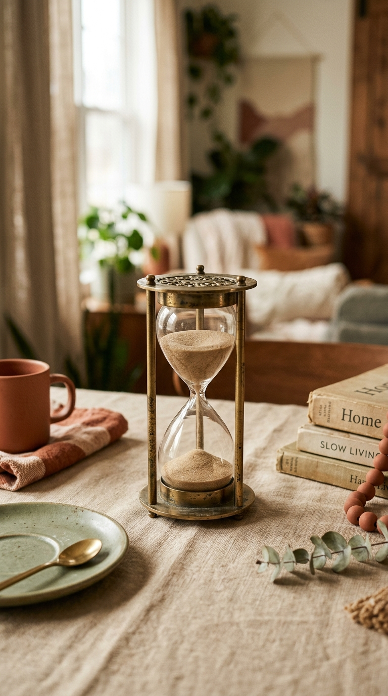
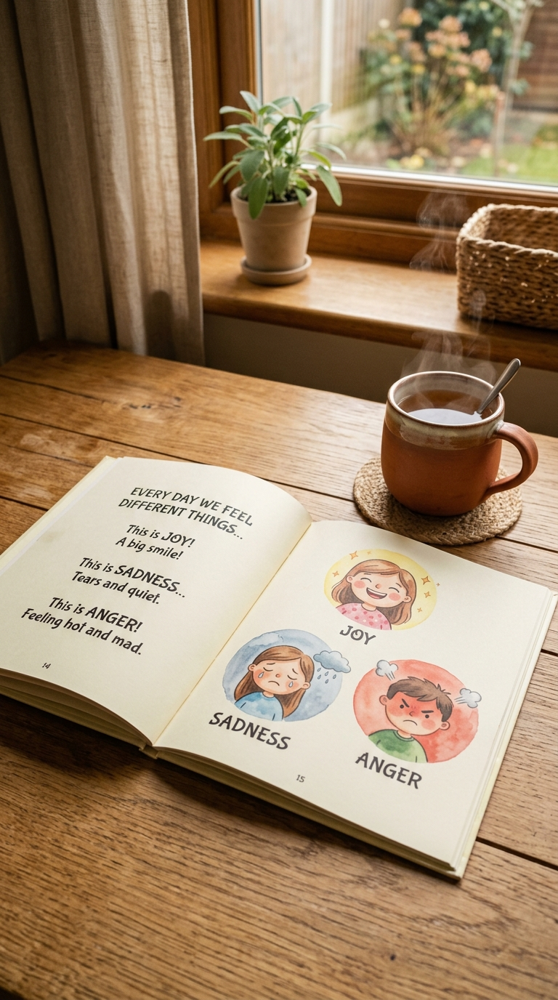

Crise au supermarché ?
3 étapes pour calmer en 90 secondes
Étape n°1
Descends à son niveau
Respire lentement
Co-régulation
Étape n°2
Nomme l'émotion
« Tu es très en colère »
Pas « arrête », pas « calme-toi »
Name it to tame it
Étape n°3
Pas de raisonnement pendant le pic
Préfrontal hors-ligne
60-90 sec de silence calme
Sauvegarde
pour la prochaine.